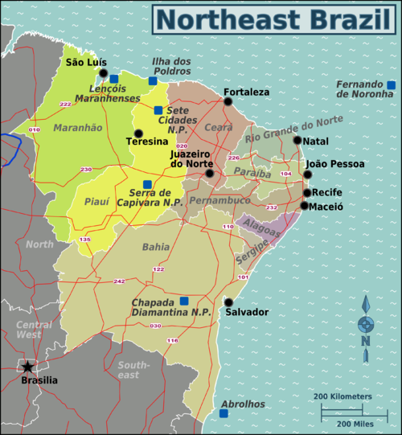

Northeast
The Northeast Region of Brazil is one of the five official and political regions of the country according to the Brazilian Institute of Geography and Statistics. Of Brazil's twenty-six states, it comprises nine: Maranhão, Piauí, Ceará, Rio Grande do Norte, Paraíba, Pernambuco, Alagoas, Sergipe and Bahia, along with the Fernando de Noronha archipelago (formerly a separate territory, now part of Pernambuco). Chiefly known as Nordeste ("Northeast") in Brazil, this region was the first to be colonized by the Portuguese and other European peoples, playing a crucial role in the country's history. Nordeste's dialects and rich culture, including its folklore, cuisines, music and literature, became the most easily distinguishable across the country. To this day, Nordeste is known for its history and culture, as well as for its natural environment and its hot weather.
- Area: 1,561,177 km² (18.3%);
- Population: 53,340,945 (30.55 people/km²; 29%; 2009);
- GDP: R$437 billion / US$273,1 billion (2009; ~12%);
- Climate: Hot all the year long. Tropical near the coast and semi-arid in the interior; semi-equatorial in the far west of the region;
- States: Alagoas, Bahia, Ceará, Maranhão, Paraíba, Pernambuco, Piauí, Rio Grande do Norte, Sergipe;
- Largest Cities: Salvador (2,676,606); Fortaleza (2,447,409); Recife (1,536,934); São Luís (1,011,943); Maceió (932,608); Natal (789,836); Teresina (714,583); João Pessoa (595,429); Jaboatão dos Guararapes; (580,795); Feira de Santana (481,137); Aracaju (461,083); Olinda (368,666); Campina Grande (354,546);
- Economy: Tourism, cocoa, machinery manufacturing, textiles;
- Transport: Mainly highways, which are more abundant along the coast, although transport by sea is also important;
- Vegetation: Mainly desert-like vegetation, with tropical forests along the coast and in the west and savanna-like vegetation in the southwest;
- Notable characteristics: This region was the first part of Brazil discovered by the Portuguese, and the first Brazilian capital, Salvador, was founded here. It has the lowest levels in the country in almost all of the social indicators, being considered the most impoverished region in Brazil. However, has been growing above national average since the start of 21st century, gradually reducing the socio-economic distance to the other regions.